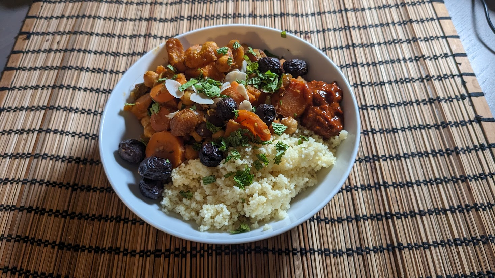

Tajine de légumes parfumé

Pour 6 personnes :
- 750g carottes
- 750g de patates douces
- Deux boîtes (de 400mL chaque) de pois chiches
- Une grosse cuillère à soupe de concentré de tomates
- Deux oignons
- Quatre gousses d'ail
- (Facultatif) Un citron confit au sel
- Une poignée d'abricots secs
- Huit dattes
- Un gros pouce de gingembre
- Deux bâtons de cannelle
- Deux cuillères à soupe de ras el-hanout
- (Facultatif) Des amandes émincées ou effilées, préférablement toastées
- (Facultatif) De la coriandre ou de la menthe fraîche
- (Facultatif) Des olives, préférablement kalamata
- Sel, huile d'olive
- Éplucher, émincer et faire revenir les oignons puis l'ail avec de l'huile d'olive dans le fond d'une mijoteuse.
- Pendant ce temps, éplucher et couper les carottes et les patates douces en petits morceaux, et les ajouter dans la mijoteuse pour les faire revenir quelques minutes.
- Pendant ce temps, virer la pulpe du citron confit, et le rincer abondamment. Couper sa peau en fines lamelles, couper les abricots en deux ou trois, couper les dattes en quatre, éplucher et émincer le gingembre, et ajouter le tout avec le concentré de tomates, les bâtons cannelle coupés en deux, et un peu de sel dans la mijoteuse.
- Faire cuire 8 heures à feu doux. Rincer et égoutter les pois chiches, et les ajouter après 2 heures de cuisson si on les préfère bien tendres, ou 1-2 heures avant la fin de la cuisson si on veut les garder un peu fermes.
- Rectifier l'assaisonnement en sel, et servir chaud avec du couscous, en saupoudrant d'amandes, d'olives coupées en 3 et/ou de coriandre ou menthe lavée et ciselée.
Retour à la liste des recettes